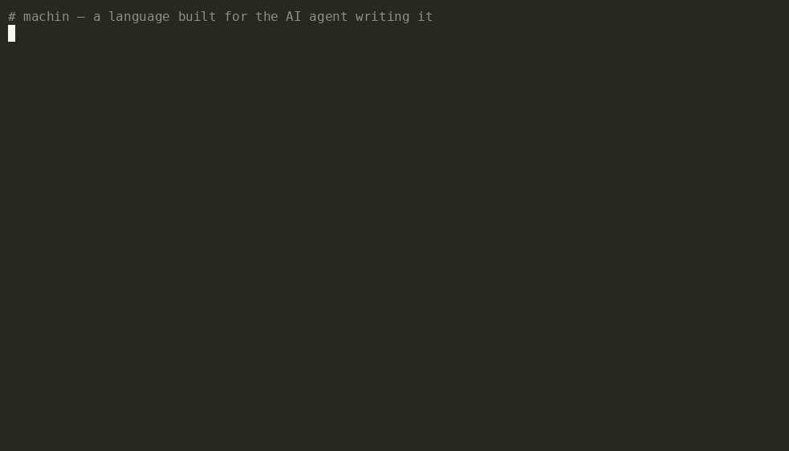

A language optimized for the AI agent writing it, not the human reading it.
As terse as Python to write, compiled through C to a tiny native binary. Write it like a script, ship it like C.

A whole REST + SQLite service → a native binary → serving, in ~20 seconds.
The same programs, written idiomatically in each language — all runnable under bench/ in the repo.
1 · As cheap for an agent to write as Python. Tokens to author the same REST+SQLite API (tiktoken o200k):
| language | author tokens | ships as |
|---|---|---|
| machin | 388 | 44 KB native binary, 0 deps |
| Python | 383 (0.99×) | source + a CPython interpreter |
| Go | 527 (1.36×) | 14.8 MB binary + a module dep |
2 · Native-tier fast. Four kernels, byte-identical output, each at its best release setting (min of 5):
| kernel | machin | Rust -O3 | Zig |
|---|---|---|---|
| fib(40) | 245 ms | 303 | 306 |
| mandelbrot 1000² | 827 | 814 | 819 |
| sieve 10⁷ | 203 | 153 | 145 |
| intsum 10⁹ | 2832 ms | 3764 | 3556 |
It's C underneath — wins scalar recursion + integer loops, ties float, trails ~1.4× on array-heavy code. In the same tier as Rust/Zig; not "faster than Rust".
3 · Ships like nothing in the scripting world. Same HTTP server, deployed:
| same server | image | cold start | idle RAM |
|---|---|---|---|
| machin (static, FROM scratch) | 92.9 kB | 0.49 ms | 108 kB |
| Python (py + alpine) | 47.6 MB · 512× | 49 ms · 100× | 17.9 MB · 166× |
| Node (js + alpine) | 178 MB · 1916× | 29 ms · 59× | 51 MB · 477× |
A 92.9 kB image, ready in half a millisecond, on ~0.1 MB of RAM. scp one file to a $4 VPS.
curl -fsSL https://raw.githubusercontent.com/javimosch/machin/main/install.sh | sh machin guide # the whole language, version-exact, as JSON # write app.src (a REST+SQLite service), then: machin encode framework/machweb.src app.src > app.mfl # framework ships in the binary machin build --static app.mfl -o app # static (musl) → FROM scratch ./app
Building programs needs a C compiler. machin build <file> --emit-c prints the C the compiler generated.
machweb: a native server, JSON, cookies, signed sessions, SSO, SSE, WebSockets.
SQLite built in (bundled with --static); pure-MFL Postgres / MySQL / Redis / Mongo drivers, pooled.
goroutines, channels, select; a per-goroutine arena that keeps servers memory-bounded.
SHA-256, HMAC, HKDF, Ed25519, X25519, AES-GCM — binary and text paths.
a reactive WebAssembly UI target; raylib GUI/audio/3D via C FFI.
compiles to a single native binary — no Node, no interpreter, no runtime.
machin-hook — a self-hosted webhook relay + live inspector (webhook.site + smee.io in one binary): capture any request, watch it land live over SSE, replay or forward it. ~330 lines of MFL. The curated list of tools is awesome-machin.